Your browser doesn't support the features required by impress.js, so you are presented with a simplified version of this presentation.
For the best experience please use the latest Chrome, Safari or Firefox browser.
Integration von Xtext in einen bestehenden Softwareentwicklungs-prozess
Inhalt
- Ausgangssituation und Idee
- Erstellen der Grammatik
- Generatoren
- Anpassen der Entwicklungsumgebung
- Ergebnis
- NeosIT spezialisiert auf Management-Reporting Anwendungen
- Software-Projekte bei NeosIT ähneln sich
- Programmiersprache ist unterschiedlich
Warum die Gemeinsamkeiten nicht abstrahieren?
Quelle: http://hqwallpapers4free.com/wallpaper/animals_monkeys_desktop_1920x1200_hd-wallpaper-1204580.jpg
Erste Erfahrungen in Code-Generierung mit Xtext:
Generierung von Datenbankzugriffsschicht und Entitäten in C#
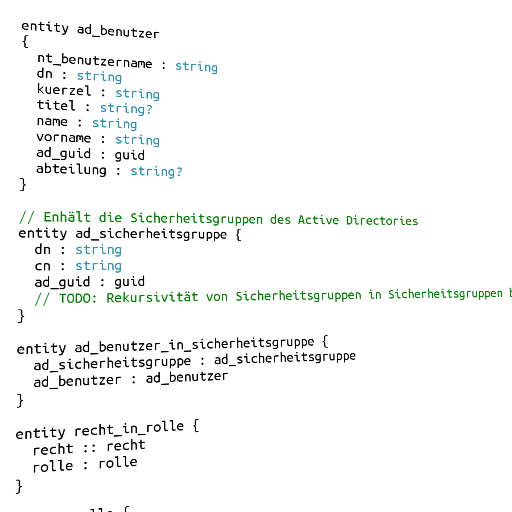
Modell der ersten Xtext-Versuche
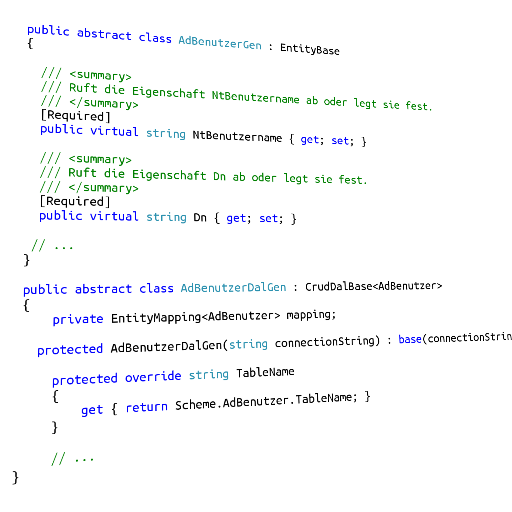
Generierte Entitäten und Datenzugriffsschicht
Die Anforderungen an eine neue domänenspezifische Sprache (DSL)
Unterstützung des Softwareentwicklungsprozesses
Eine DSL für beliebige Programmiersprachen/Artefakte
Abbilden von Domänen, Prozessen und Transitionen
Einfache Bedienung für den Anwender
Einfache Erweiterung durch den Entwickler
Spezifizierung der DSL
Welche Sprachkonzepte sind dem Anwender bekannt?
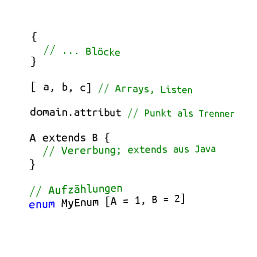
Welche Grammatik fühlt sich richtig an?
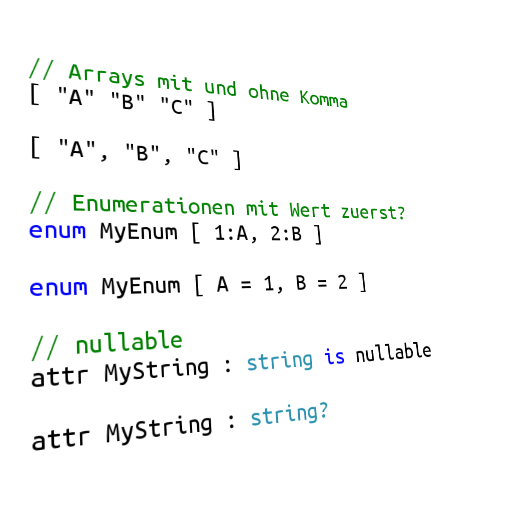
Quelle: http://www.heise.de/foto/galerie/foto/Mal-nachdenken-d93e5a96db45941692bdb88502b46bcb/
Definition der DSL in Xtext
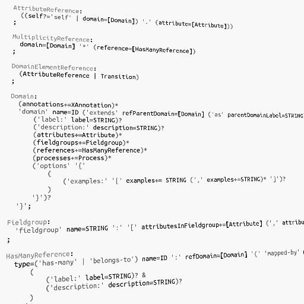
Die DSL (Rapid) in der Praxis
Support für mehrere Generatoren
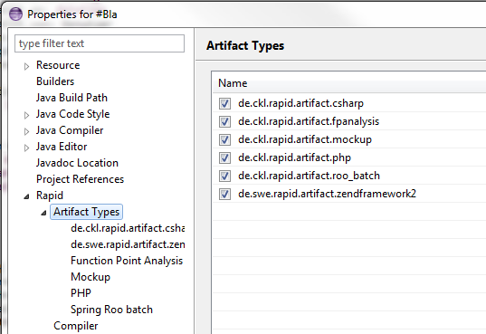
Dedizierte Aktivierung pro Projekt
Mocking
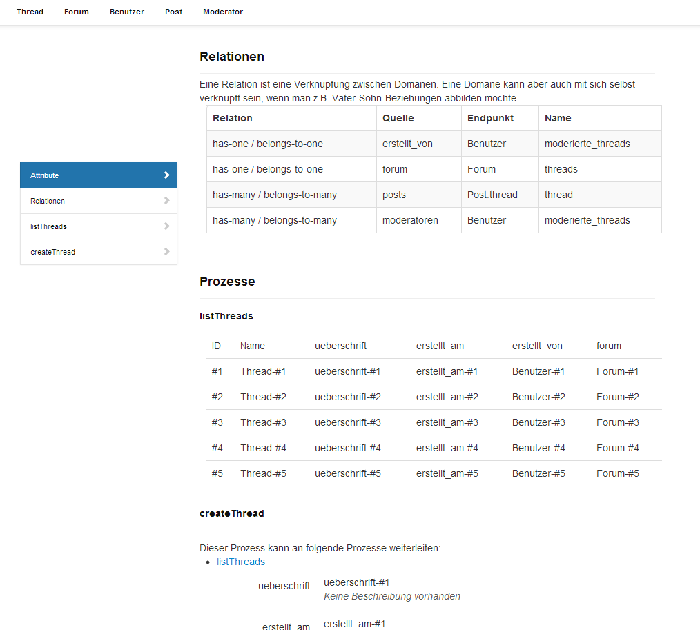
Function Point-Analyse
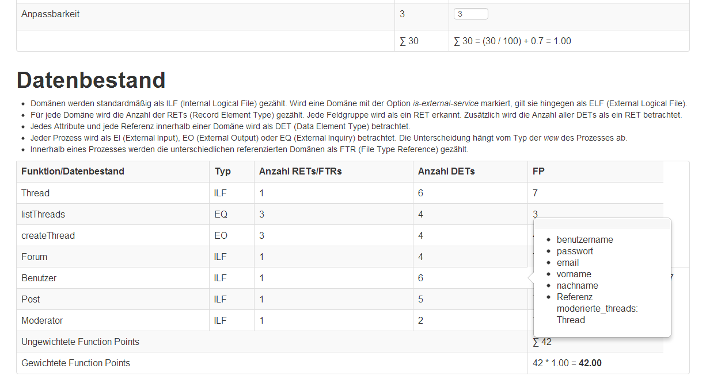
Anpassung der Entwicklungsumgebung
Validierung
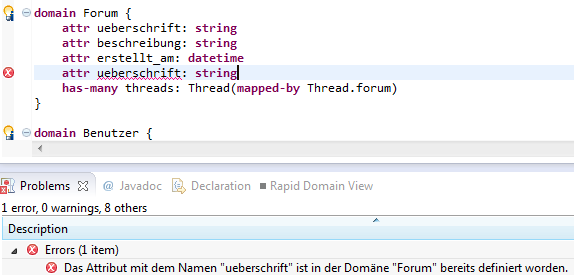
Outlining
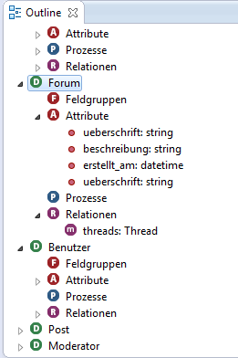
Formatting
Quickfixes
Automatisches Erstellen von Prozessen
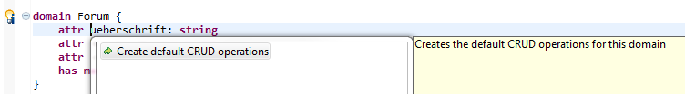
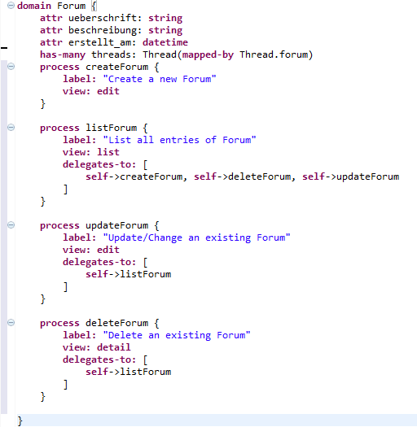
Einführen einer Assoziationsdomäne
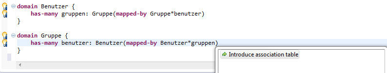
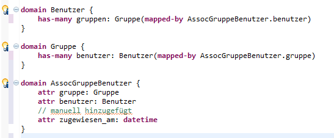
Assoziationsdomäne wurde generiert
Support für Annotationen
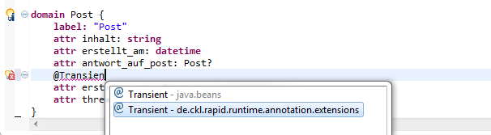
Weitere Features
- Assistenten zum Generieren von eigenen Generatoren
- Experimenteller Graph-Viewer zum Visualisieren der Beziehungen
Trivia
- Survey-DSL
- FPA-Vergleich als Entscheidungsgrundlage
- Maven Tycho & Xtext implementiert und dokumentiert
Ergebnis
- Implementierung einer Xtext-basierten DSL
- Einfache Erweiterung durch zusätzliche Generatoren
- Ökosystem um Rapid ist bereits enstanden
- Rapid wird erfolgreich produktiv eingesetzt
Danke für die Aufmerksamkeit!